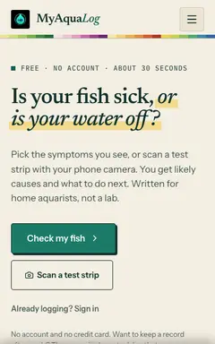
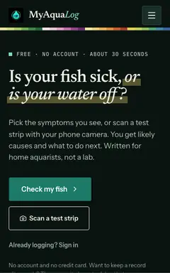
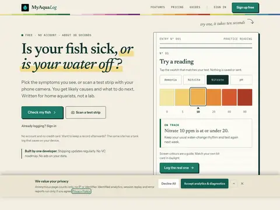
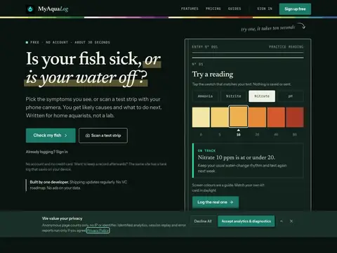
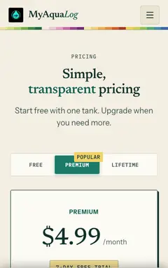
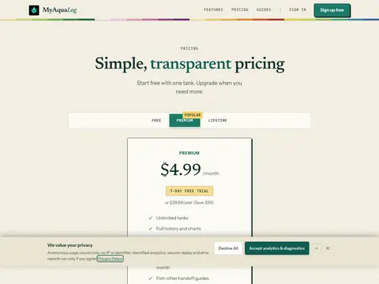
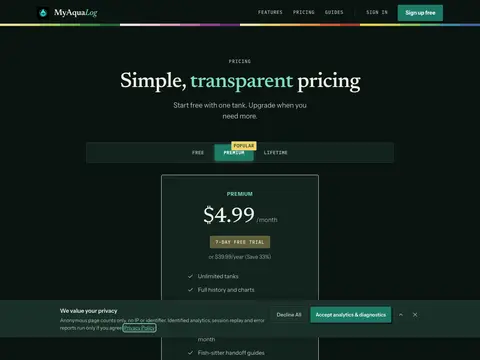

Design Spine screenshots every route of your Next.js app in every state, width and theme, flags what broke, and lays it all out on one contact sheet for you to approve. It runs on your machine.






banner covers the plan card

A real run: 6 routes, 2 widths, 2 themes, 24 frames in 31 seconds. Circled frames are approved. Crossed frames go back with a note.
Most UI gets checked in one state: the happy path, at desktop width, in light mode. Coding agents make it worse. They build screen by screen and never open the 390 pixel dark-mode empty state.
Design Spine makes the whole matrix visible, checks each frame automatically, and turns "someone looked at it" into a record your CI can enforce.
Reads your app/ folder and drafts every route with the states it can have.
spine planEach route in each state, at 390 and 1280, in light and dark. Empty and error states come from mocked responses, not a seeded database.
spine captureApprove or reject each frame with a keystroke. Leave a note pinned to the exact spot.
spine reviewApproved frames become baselines. Nothing becomes a baseline without a person.
spine approveCI fails when a frame drifts from what you approved.
spine diffChecks flag frames for your attention. They never approve anything.
| Feature | Design Spine | Hosted visual testing | Playwright screenshots |
|---|---|---|---|
| Screenshots stay on your machine | Yes | No, uploaded | Yes |
| Plans routes and states from your app | Yes | No | No |
| Per-frame human approval | Yes | Yes | No |
| Shows states you have not captured yet | Yes | No | No |
| Needs Storybook or an account | No | Usually | No |
| Cost grows with snapshot count | No | Yes | No |
# needs Bun 1.3+ and your app running locally
cd your-next-app
spine plan
spine capture
spine review
Next.js App Router today. Chromium only, tested on macOS. Full setup on GitHub.